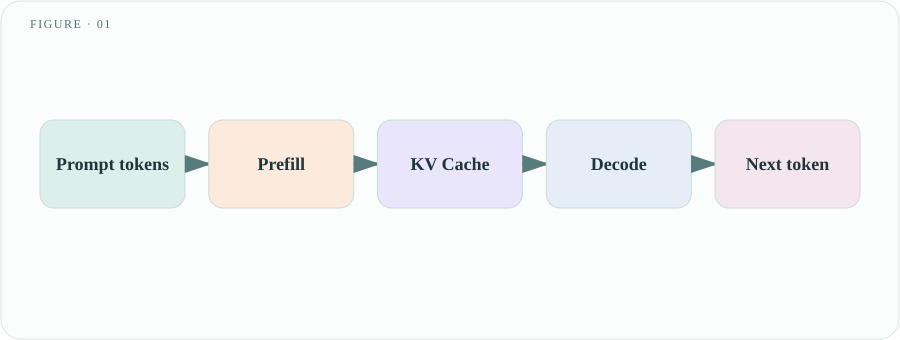

大家好，我是你们的讲师。在深入 vLLM 之前，咱们得先把 LLM 推理这件事本身搞明白。很多同学一上来就想装 vLLM、跑模型，结果遇到问题不知道怎么排查——根本原因是急着动手，没有理解推理的底层逻辑。这一章，咱们静下心来把基础打扎实。

1.1 大语言模型是如何"说话"的
你给 ChatGPT 发一句"写一首关于春天的诗"，它怎么就从这 8 个字生出一首五言绝句的？这个过程叫自回归生成（Autoregressive Generation）。
简单说，模型每次只生成一个 token（可以理解为一个词或一个字），然后再把这个 token 拼到输入后面，继续生成下一个。就像多米诺骨牌，一块推倒一块：
Step 1: "写一首关于春天的诗" → 模型 → "春"
Step 2: "写一首关于春天的诗春" → 模型 → "眠"
Step 3: "写一首关于春天的诗春眠" → 模型 → "不"
Step 4: "写一首关于春天的诗春眠不" → 模型 → "觉"
...每次生成都要把整个序列重新跑一遍模型。这就引出了一个关键问题：在没有 KV Cache 时，重复计算历史 token 会浪费工作；使用 KV Cache 后，每个新 token 仍需访问已有上下文，因此单步 attention 成本随上下文长度增长，整个生成过程也不会变成线性复杂度。输入 100 token，生成 1000 token，第 1000 步要处理 1100 个 token 的注意力矩阵——那计算量是 O(n²) 的。
1.2 Transformer 推理的两个阶段
LLM 推理可以清晰地分成两个阶段，了解这个区分是理解一切推理优化的基础。
| 阶段 | Prefill（预填充） | Decode（解码） |
|---|---|---|
| 处理什么 | 一次性处理所有 prompt token | 逐个生成 output token |
| 计算特征 | 计算密集（大量矩阵乘法） | 内存密集（大量 KV cache 读写） |
| 并行度 | 高（所有 token 同时计算） | 低（必须串行，一步一个） |
| 耗时占比 | 10-30% | 70-90% |
| GPU 利用率 | 高（90%+） | 低（30-60%，大部分时间等显存） |
注意看最后一列——Decode 占了大头却不是因为算不动，而是因为显存带宽不够。GPU 的计算单元大部分时间在等数据从显存搬过来。
核心洞察：LLM 推理的瓶颈不在计算，在于显存。谁把显存用得更高效，谁就能跑得更快、服务更多人。vLLM 的所有优化几乎都围绕这个洞察展开。
1.3 KV Cache：用空间换时间
回看自回归生成的每一步——之前算过的 token 的 Key 和 Value，是不是每次都要重新算一遍？答案是：不需要。第一次算出来存起来就行。
这就是 KV Cache 的核心思想。对于 Attention 计算：
Attention(Q, K, V) = softmax(Q × K^T / √d) × V
Step 1: Q=[q1], K=[k1], V=[v1] → 计算 k1,v1 并缓存
Step 2: Q=[q2], K=[k1,k2], V=[v1,v2] → 只需算 k2,v2, k1,v1 从缓存读
Step 3: Q=[q3], K=[k1,k2,k3], V=[v1,v2,v3] → 只需算 k3,v3
...KV Cache 避免重复计算历史 token 的 K/V 投影；对单个 decode step，Attention 仍需访问已有上下文，但代价是——要存的东西越来越多。一条 8192 token 的请求，KV cache 可能占 4GB 显存。
1.4 显存都去哪了
很多初学者以为"8B 模型占 16GB 显存"就完事了。实际推理时，显存消耗远不止模型参数：
| 显存占用项 | 8B 模型 (FP16) | 占比 |
|---|---|---|
| 模型权重 | ~16 GB | 30-50% |
| KV Cache | ~20-40 GB（取决于并发数和长度） | 40-60% |
| 中间激活 | ~2-4 GB | 5-10% |
| 其他（CUDA context等） | ~1-2 GB | 2-5% |
看清楚了吧？KV Cache 才是真正的显存大户。而且它是动态的——并发请求越多、序列越长，占得越多。
经验之谈：我刚入行时用 HuggingFace Transformers 部署模型，batch_size 设 4 就 OOM，一顿排查才发现 KV cache 导致显存碎片化严重。后来 vLLM 的 PagedAttention 让同样 GPU 跑 32 并发都没问题。第三章会详细讲这个。
1.5 传统推理的三大痛点
在 vLLM 出现之前，用 HuggingFace Transformers 或类似框架做推理部署，有三个让人头疼的问题：
痛点 1：KV Cache 显存碎片化
传统方式为每个请求预分配一块连续的显存空间存放 KV cache。问题在于：(1) 生成长度不确定，预分配多了浪费，少了不够；(2) 不同请求的分配和释放交错进行，显存出现"瑞士奶酪"般的空洞。实测浪费率高达 60-80%。
痛点 2：静态批处理效率低
把多个请求打包成 batch 一起推理能提高 GPU 利用率，但传统的做法是——组好 batch 后必须等所有请求都生成完才能换下一批。一个请求生 5 个 token，另一个生 500 个，早完成的那个白白占着槽位干等。
痛点 3：重复计算系统提示
RAG 应用、聊天机器人，每个请求前面都挂着一样的 system prompt。传统方式每个请求独立计算 system prompt 的 KV cache——10 个请求算了 10 遍同样的东西。
1.6 推理框架的衡量指标
| 指标 | 含义 | 目标 |
|---|---|---|
| TTFT (Time To First Token) | 从收到请求到输出第一个 token 的延迟 | <200ms (P99) |
| TPOT (Time Per Output Token) | 每生成一个 token 的平均时间 | <20ms |
| Throughput (吞吐量) | 每秒生成的 token 总数 | 最大化 |
| QPS (Queries Per Second) | 每秒处理的请求数 | 按业务需求 |
| GPU Utilization | GPU 计算单元利用率 | 85-95% |
| Max Concurrent Seqs | 最大并发序列数 | 显存允许的最大值 |
踩坑提醒：不要只看吞吐量。我曾经优化一个服务，吞吐看起来很好（2000 tok/s），但 P99 延迟飙到了 5 秒——因为有几个长请求一直霸占着资源。好的推理引擎要兼顾吞吐和延迟的公平性。
好了，第一章的内容就到这里。你不需要记住所有细节，但请记住一个核心洞察：LLM 推理的瓶颈是显存，不是计算。带着这个认知，下一章咱们正式认识 vLLM，看它是怎么解决这些痛点的。
参考资料与证据
- PagedAttention 论文（SOSP 2023）Abstract；§2
- vLLM 架构概览Entrypoints；V1 Process Architecture